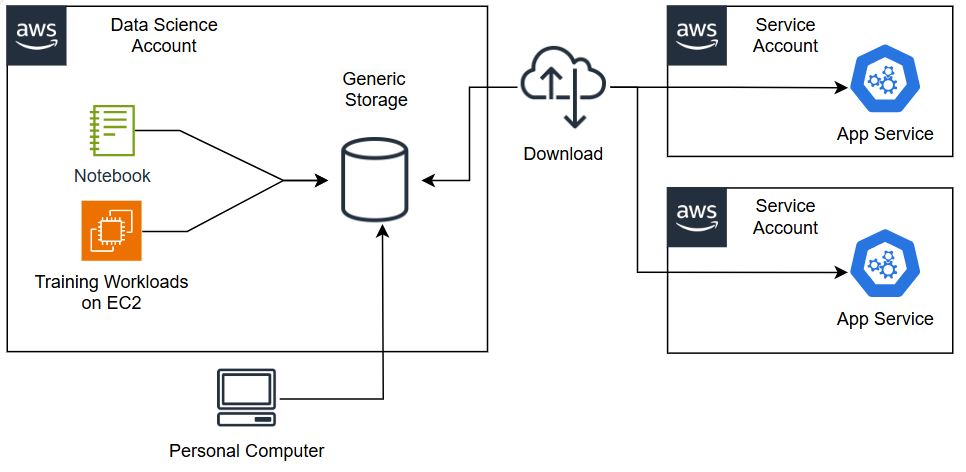

By Daniel Vieira, Debora Fanin, Gopi Mudiyala, and Saurabh Trikande – April 8, 2025, in the Advanced section (300), Amazon SageMaker Data & AI Governance, Customer Solutions.
Headquartered in São Paulo, Brazil, iFood is a privately held national company and a leader in food tech in Latin America, processing millions of orders every month. iFood stands out for its strategy of integrating advanced technology into its operations. With the support of AWS, iFood has developed a powerful machine learning (ML) inference infrastructure using services like Amazon SageMaker to create and deploy ML models efficiently. This collaboration has allowed iFood to not only optimize internal processes but also provide innovative solutions for its delivery partners and restaurants.
iFood’s ML platform includes a set of tools, processes, and workflows developed with the following main objectives:
Figure 1. Overview — iFood and the application of AI/ML in their product system.
To achieve these goals, iFood leverages SageMaker to streamline model training and deployment. By integrating SageMaker features into iFood’s infrastructure, key steps are automated — from creating training datasets, training models, deploying them into production, to continuously monitoring their performance.
This article outlines how iFood uses SageMaker to enhance the entire ML lifecycle — from training to inference — and describes architectural changes and capabilities developed by the team.
iFood leverages its AI/ML platform to enhance customer experience across various touchpoints. Some typical use cases include:
Thanks to these initiatives, iFood can forecast demand, optimize processes, and deliver consistent user experiences.
The diagram below illustrates iFood’s legacy architecture, where Data Science and Engineering teams had separate workflows — leading to challenges when deploying real-time ML models into production.

Figure 2. Legacy Architecture — Describing data flow and the barriers between teams.
Previously, data scientists developed models in notebooks, fine-tuned, and published artifacts. Engineers then had to integrate these artifacts into the production system, causing delays and integration errors. To address this, iFood developed an internal ML platform to unify the process from development to deployment, creating a seamless experience for both teams.
One of the core capabilities of iFood’s ML platform is providing the infrastructure to serve predictions. The internal platform (called ML Go!) is responsible for managing the deployment process, overseeing SageMaker Endpoints and Jobs. ML Go! supports both offline (batch) and real-time (online) predictions, and manages the lifecycle of models (registry, versioning, monitoring).
Figure 3. Updated Architecture — Including pipelines, model registry, and inference components.
The platform provides:
A significant improvement is the abstraction concept connecting with SageMaker (Endpoints & Jobs) called ML Go! Gateway, along with separating “inference components” in the endpoint — helping to divide concerns, accelerate delivery, and manage resources more efficiently. Endpoints now manage multiple inference components, and ML Go! CI/CD only focuses on model version promotion, without deep intervention in infrastructure.
Figure 4. Final Architecture — Inference components, ML Go! Gateway, and integration with service accounts.
In this new structure:
Standardizing the environment through containers is a crucial element of modern ML platforms. SageMaker provides built-in containers for TensorFlow, PyTorch, XGBoost, and more, as well as the ability to use custom containers.
iFood focuses on using custom containers to:
BruceML helps standardize the way training and serving code is written, creating a scaffold compatible with SageMaker (autotuning, deployment hooks, monitoring).
iFood uses SageMaker Pipelines to build CI/CD for ML: pipelines are responsible for orchestrating the entire data flow — from preprocessing, training, evaluation, to promotion in the Model Registry and deployment. ML Go! CI/CD integrates with the organization’s CI/CD system to:
Depending on SLA:
SageMaker Pipelines helps automate and coordinate complex workflows, reducing errors and shortening development cycles.
iFood uses multiple inference methods to meet different requirements:
The improvements in collaboration between iFood and the SageMaker Inference team include:
Some technical points iFood focuses on:
The benefits iFood has gained:
By leveraging SageMaker capabilities, iFood has transformed its approach to ML/AI: building a centralized ML platform (ML Go!), automating data flows, standardizing containers, and collaborating with the SageMaker Inference team to optimize efficiency, cost, and scalability. This has helped iFood:
“At iFood, we are leading the way in applying AI and machine learning technologies to transform… The lessons learned have helped us create our internal platform, which can serve as a blueprint for other organizations…”
– Daniel Vieira, Director of ML Platforms at iFood.
Daniel Vieira — Director of Machine Learning Engineering at iFood. He has a background in computer science (BSc & MSc, UFMG) and over a decade of experience in software engineering and ML platforms. He enjoys music, philosophy, and coffee.
Debora Fanin — Senior Customer Solutions Architect at AWS (Brazil). She specializes in managing enterprise customer transformation and designing effective cloud adoption strategies.
Saurabh Trikande — Senior Product Manager, Amazon Bedrock & SageMaker Inference. Focuses on democratizing AI and inference solutions at scale.
Gopi Mudiyala — Senior Technical Account Manager at AWS. Supports clients in the financial services industry and is passionate about machine learning.